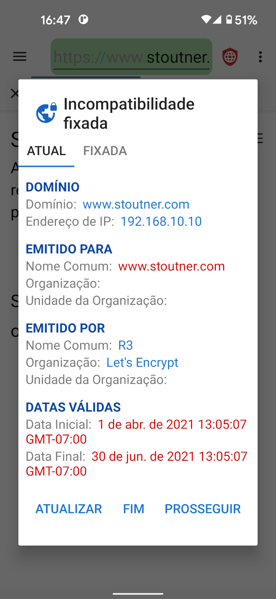
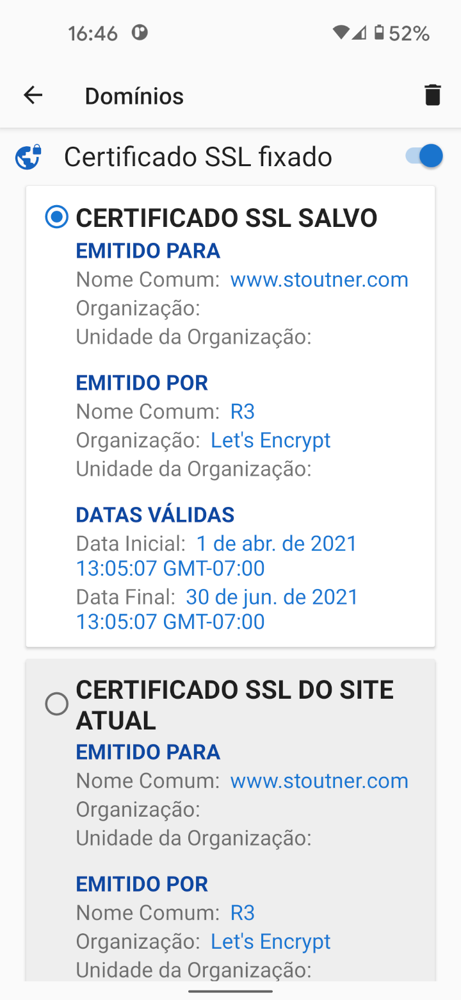

Ao visitar um URL criptografado (que começa com HTTPS), o servidor da web usa um certificado SSL para criptografar as informações enviadas para o navegador e para identificar o servidor. O objetivo da identificação do servidor é evitar que uma máquina localizada entre o navegador e o servidor da web finja ser o servidor e descriptografe as informações em trânsito. Esse tipo de ataque é conhecido como ataque Man In The Middle (MITM). Os certificados SSL são gerados por autoridades de certificação: empresas que verificam a identidade de um servidor e produzem um certificado por uma taxa. O Android tem uma lista de autoridades de certificação confiáveis e aceitará qualquer um de seus certificados para qualquer site. Não deveria ser possível para uma organização adquirir um certificado SSL para um domínio que ela não controla, mas, na prática, muitos governos e grandes corporações têm sido capazes de fazê-lo.
Fixar um certificado SSL informa ao navegador que apenas um certificado SSL específico é confiável para um determinado domínio. Qualquer outro certificado, mesmo que seja válido, será rejeitado.
Os certificados SSL expiram em uma data especificada, portanto, mesmo os certificados SSL fixados precisarão ser atualizados de vez em quando. Como regra geral, fixar certificados SSL provavelmente não é necessário na maioria dos casos. Mas, para aqueles que suspeitam que organizações poderosas podem estar almejando-os, a fixação de certificado SSL pode detectar e impedir um ataque MITM. O Privacy Browser também tem a capacidade de fixar endereços IP.
Os certificados SSL podem ser fixados nas configurações do domínio. Além de proteger contra ataques MITM, fixar um certificado autoassinado para um dispositivo como um roteador sem fio ou ponto de acesso removerá a mensagem de erro que normalmente é apresentada sempre que o site é carregado. Tocar na guia ativa exibe o certificado SSL do site atual.